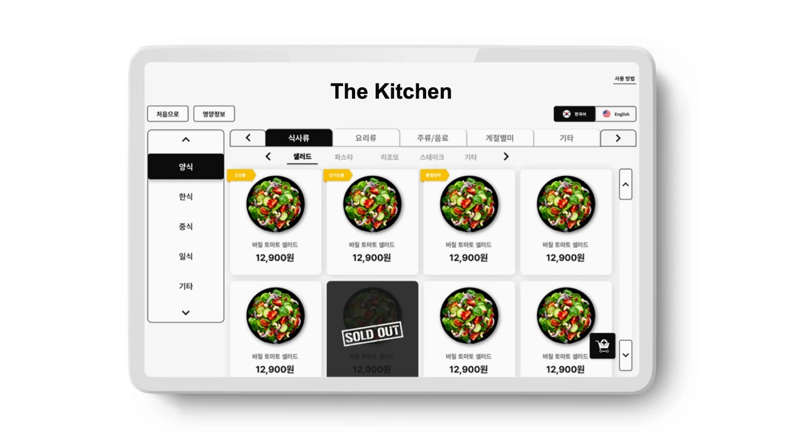
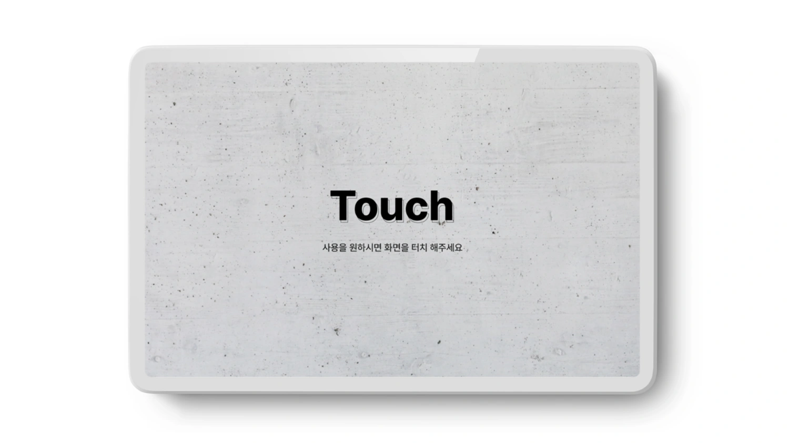
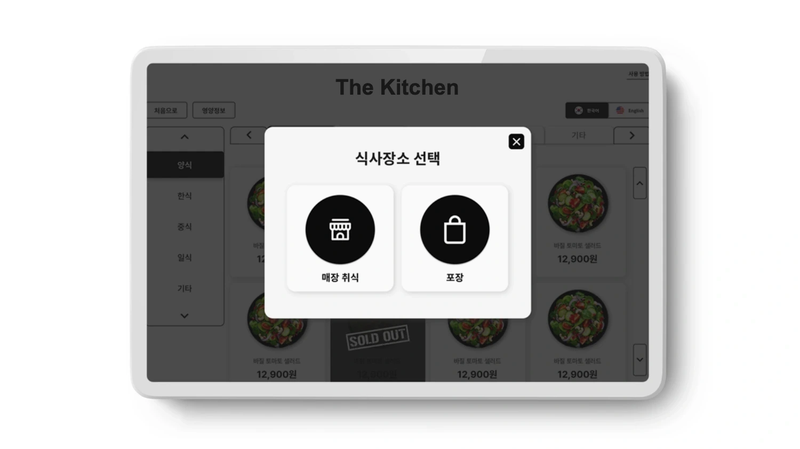
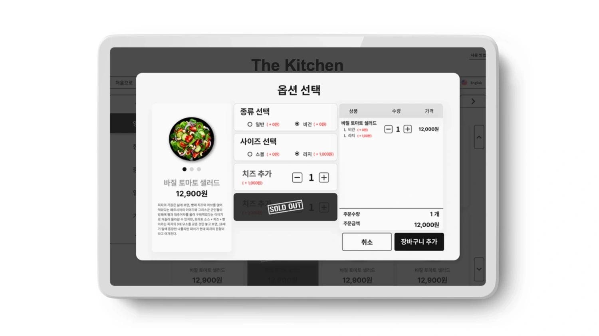
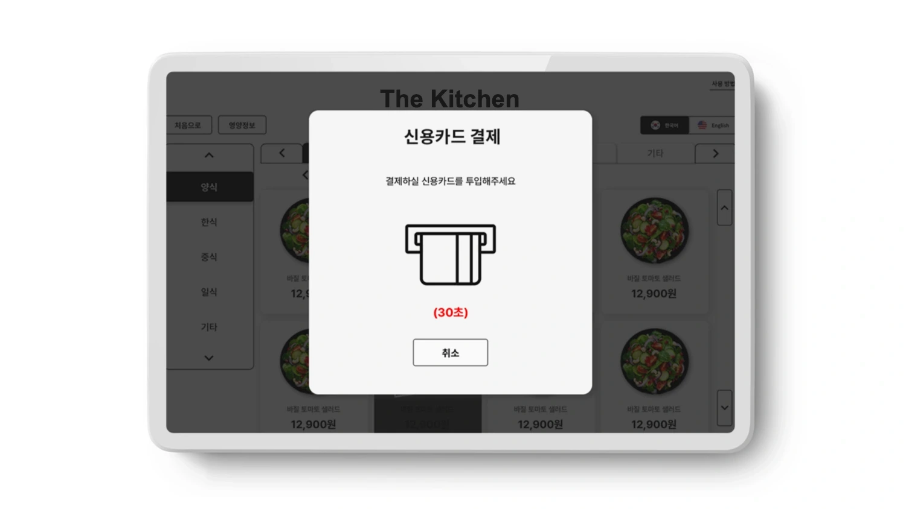
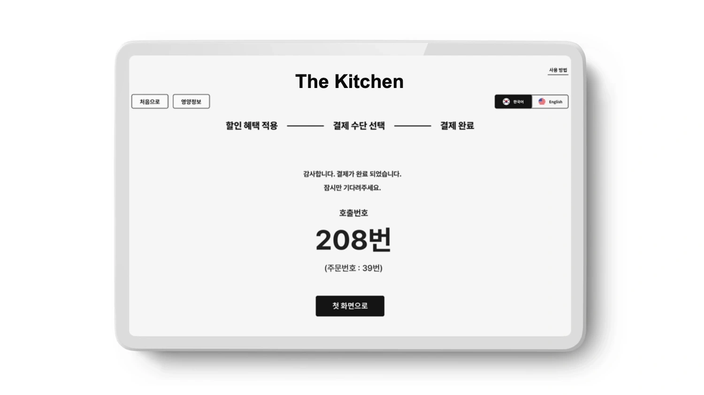

COMPANY
센시콘 · SENSICON
다른 디바이스, 한 가지 사용성.
A self-order kiosk for unmanned stores. One design system and one order flow across two very different form factors — a landscape table-order and a portrait kiosk.

비율도 환경도 전혀 다른 두 기기 — 가로 테이블오더와 세로 키오스크. 무인 매장에서 누구나 망설임 없이 주문을 완주하게 만드는 것, 그게 0→1의 과제였다.
Two screens, two ratios, two environments — and no staff to help. The job was to let anyone finish an order alone, on either device.
화면 비율이 달라도 흔들리지 않는다 — 하나의 디자인 시스템으로 두 기기를 묶고, 폼팩터별 레이아웃만 다르게 했다.

큰 터치 타깃 · 명확한 상태 · 다국어. 처음 쓰는 사람도 혼자서 완주하는 6단계 주문 플로우.




